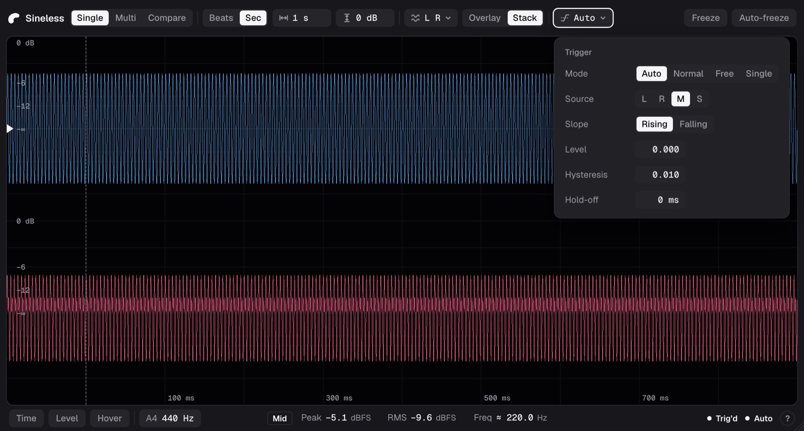
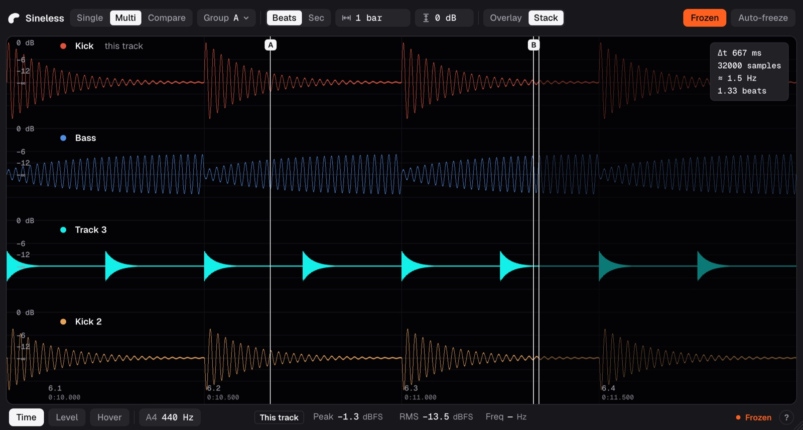
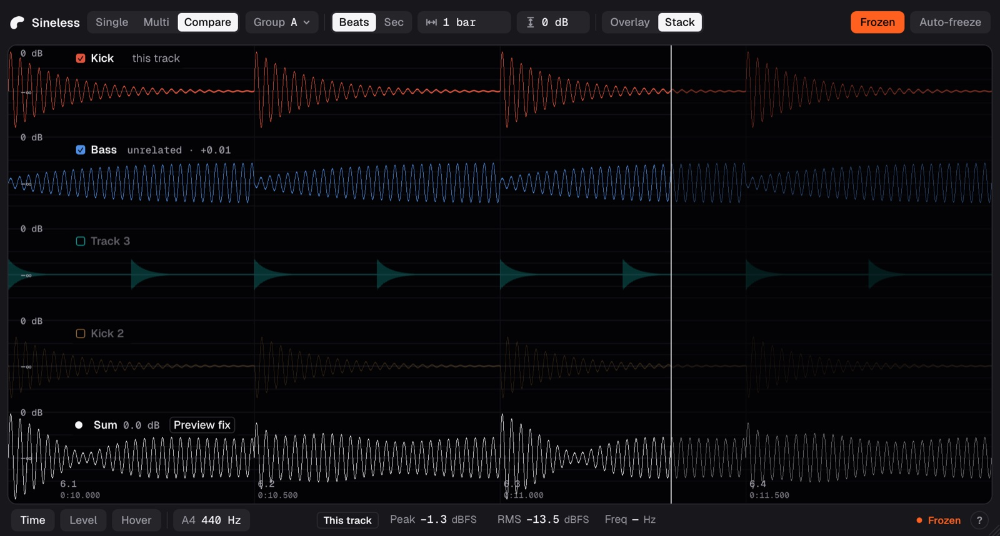

Sineless · Plugin UI redesign · Overview
The final design for the Sineless interface: one toolbar on top, a screen inset in a graphite case, colour only in the traces, and orange for Frozen alone.
This page brings together the three design steps and what we chose in each: the layout (concept A, Toolbar), the visual direction (Graphite, accent on Frozen) and the colour tokens. Frames are drawn at their real pixel size and scaled to fit. The token values live in sineless-tokens.json (source of truth) and sineless-tokens.css; the plugin's own copy is ui/src/tokens.css. Working pages: audit · layout concepts · visual direction · colour and tokens.
Each step offered options; these are the ones we chose.
| Step | Chosen | Not chosen | Why |
|---|---|---|---|
| 2 · Layout | A · Toolbar (v6): every control that applies is in one row above the screen; readouts and state in a status bar below | B · Inspector: settings in a side panel | Simple to describe, nothing folds away, and the window stays short. B needed a 710 px tall window. |
| 3 · Treatment | Graphite: graphite chrome around an inset black screen with rounded corners; the selected option is white | Black: one black surface split by hairlines | Structure and selection read at a glance, and the inset screen looks like an instrument. |
| 3 · Accent | Frozen: the Freeze button while frozen, and the Frozen chip | The playhead; the cursors | Frozen is the one state where the screen isn't live, and the audit found it too easy to miss. Both places are text, so the orange never mixes with traces. |
| 4 · Colour | Tokens v1: greys for the chrome, four channel colours, a 16-colour track palette, yellow for problems | Violet for Side (step 3) | Violet and Left's blue were almost the same with deuteranopia (ΔE 2.5). Lime is clearly different in every kind of vision tested. |
The three display modes at the default size, 1080 × 580.
Layout · concept A
Like a Mac app's unified toolbar. Every control that applies in the current mode is in one row above the screen, always. A status bar under the screen holds the cursor buttons, the readouts and the state.
Measured on the widest toolbar: Multi or Compare · Seconds, trigger mode Single (so Re-arm shows), frozen; Single is 1 px narrower. Only the wordmark ever hides. protocol/src/limits.ts holds the sizes the code uses.
| Size | Toolbar | |
|---|---|---|
| Default | 1080 × 580 | Mark and wordmark (needs 1071 px) |
| 1020 to 1079 px wide | — | Mark alone |
| Minimum | 1020 × 400 | Mark alone (needs 1012 px) |
| Chrome | Toolbar 48 px, status bar 34 px | The screen is inset 8 px with 10 px corners; it takes about 85% of the window at the default size |
Visual direction · Graphite
The chrome is dark graphite and the screen is an inset black display with rounded corners, like the glass on a hardware instrument. Controls are filled grey without outlines; the selected option is white.
Drawn on a 12 px grid with a 1.3 px stroke and round ends, to sit beside Geist Mono values.
Colour and tokens
Left blue, Right pink, Mid white, Side lime. None is orange or amber, so the accent stays unique. In Multi and Compare, lanes take the host's track colours as they come; the sum lane is white.
For lanes whose host gives no track colour, which today means every Audio Unit host. Sixteen colours at three lightness levels, all at least 6:1 against the screen, none close to the orange accent or the white sum lane. They are assigned in this order, so lanes next to each other always differ clearly (ΔE 18 or more in every kind of vision), and so do lanes two apart in normal vision.
Sixteen colours can't all be told apart with colour blindness; no palette that size can. Lanes always carry the track's name, so colour is never the only way to tell them apart.
Text needs 4.5:1 (WCAG 2.2 AA). Traces are measured against the screen; they are thin lines, so they get the same bar as text.
| Where | Colours | Ratio | AA |
|---|
Not measured: dividers and the screen's edge (1.3:1). They are decoration; every control is identified by its text or icon, not by its outline.
The design on the real plugin page as merged (#244), running on its mock data at the default size. Measured there with Geist, the widest toolbar needs 1071 px with the wordmark and 1012 px without, so the 1080 and 1020 px sizes hold; the editor tests check every state at both.


